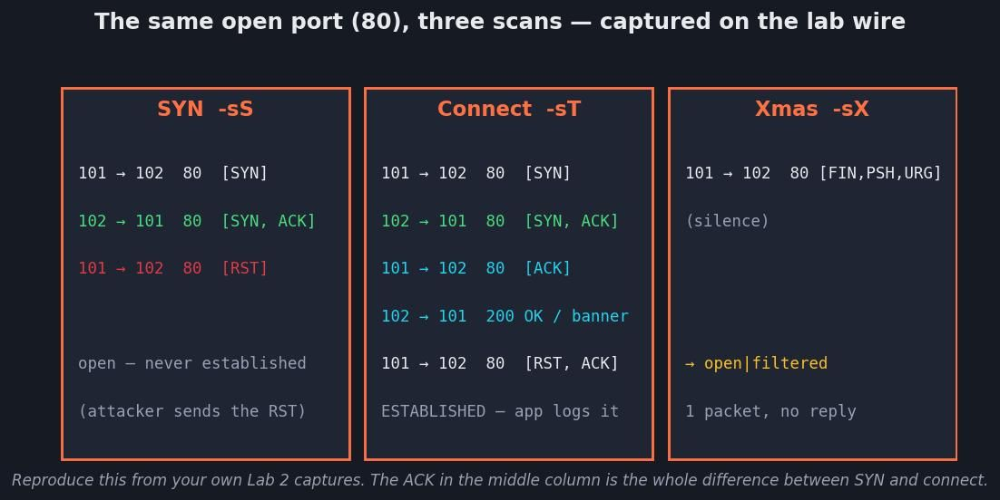
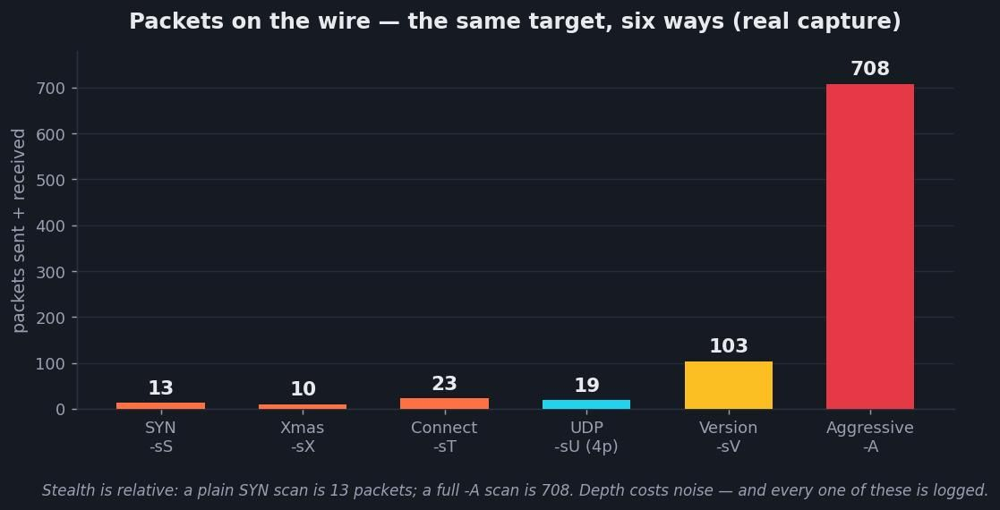

Scanning & Enumeration
Last session the target never knew you were there. Today it finds out — and you learn to be the one who catches it.
Today's agenda
| Block | What we do | Format | Min |
|---|---|---|---|
| 1 | Where the recon report becomes a scan list · why scanning is loud | Theory | 8 |
| 2 | Lab pre-flight — four VMs, one subnet, three targets answering | Hands-on | 6 |
| 3 | The target zoo — one scan, four OSes (MSF2 · Win7 · Win10 · DC) | Theory | 7 |
| 4 | Host discovery — ARP on the wire vs ICMP across a router | Theory | 9 |
| 5 | Lab 1 — find the live hosts, and the one that plays dead | Hands-on | 12 |
| 6 | TCP flags and every scan type · UDP and why it hurts | Theory | 17 |
| 7 | Lab 2 — one target, three scans, Wireshark open | Hands-on | 20 |
| 8 | Timing, breadth-then-depth, OS and version discovery | Theory | 10 |
| 9 | Lab 3 — the full scan and the version guess that lies | Hands-on | 15 |
| 10 | Scanning countermeasures — the SOC flip, scan type by scan type | Defender | 7 |
| — | Break | — | 10 |
| 11 | Why your scan got caught, and what attackers do about it | Theory | 12 |
| 12 | Enumeration — the funnel from open port to way in | Theory | 7 |
| 13 | SMB enumeration, and why the textbook output is empty in 2026 | Theory | 10 |
| 14 | Lab 4 — SMB against 2012 and against today | Hands-on | 16 |
| 15 | SNMP and LDAP — the two services that hand over the org chart | Theory | 8 |
| 16 | Lab 5 — walk the MIB, query the directory | Hands-on | 15 |
| 17 | NFS · FTP · SMTP · RPC · NSE · the netcat banner | Theory | 8 |
| 18 | Lab 6 — the service sweep | Hands-on | 12 |
| 19 | Enumeration countermeasures | Defender | 5 |
| 20 | Lab 7 — read your own noise, then write the rule that catches it | Hands-on | 16 |
| 21 | Lab 8 — assemble the target profile | Hands-on | 12 |
| 22 | Into Session 4 · quiz · practice plan · homework | Wrap-up | 21 |
Two things. A target profile — every live host, every open TCP and UDP port, service and version, OS guess with a confidence level, shares, users, and a ranked "most likely way in". And one working detection rule that catches a port scan, written from packets you generated yourself, in Sigma, SPL or KQL. The profile is Session 4's input. The rule is the job.
Every hands-on block today runs against your own lab VMs on the host-only network. That is the only place a full subnet sweep, every scan type and real service enumeration are lawful. Two public hosts appear for one contrast exercise, both with published permission, and both rate-limited. Sending a scan anywhere else is a criminal offence in most jurisdictions, including Egypt. There is no "just to see".
The Report Becomes a Scan List
You ended last session with a ranked recon report. Today the first three columns of it turn into targets, and the target starts logging you.
Session 2's deliverable was a ranked recon report on a real organisation, assembled entirely from public data — the target never knew. That report named hosts, IP ranges, and technologies. Today you take that list and confirm it: which of those hosts is actually alive, which ports are really open, and what is really running on them. Recon told you where to look. Scanning tells you what is there.
Recon was invisible. This is not.
Hold onto the difference, because it is the spine of the whole session. In Session 2 every technique was passive — you read indexes, certificate logs and registration records that a third party had already collected. The target's logs stayed empty. You could footprint a company for a week and it would never know.
The moment you send a packet at the target, that ends. Scanning is active: your IP address arrives at their door, thousands of times, in a pattern no normal client produces. It is the loudest thing an attacker does, and — this is the part the textbooks skip — it is the single most commonly detected stage of a real intrusion. A firewall log, an IDS signature, a jump in connection attempts: this is where the defender first sees the attacker.
Your instructor is a SOC analyst. This is the session where the offensive and defensive tracks meet, because scanning is the first attacker action a defender can reliably catch. So every scan you learn to run, you also learn to detect — attacker terminal on one side, the defender's packet capture and log line on the other. A modern EDR or IDS flags a default nmap -A in seconds. Teaching you the flags without teaching you that would be teaching a myth.
Where this sits in ATT&CK
Session 2 lived in TA0043 Reconnaissance. Today we move into the target itself. Active scanning still has a foot in Reconnaissance, but enumeration is TA0007 Discovery — the tactic that describes an attacker already in contact with the systems, mapping what is there.
| Today's action | ATT&CK technique | ID |
|---|---|---|
| Sending scans at IP ranges | Active Scanning | T1595 |
| Sweeping a subnet for live hosts | Active Scanning: Scanning IP Blocks | T1595.001 |
| Building the network picture | Gather Victim Network Information | T1590 |
| Port/service discovery | Network Service Discovery | T1046 |
| Finding other live hosts from a foothold | Remote System Discovery | T1018 |
| Enumerating shares | Network Share Discovery | T1135 |
| Enumerating users | Account Discovery | T1087 |
| Enumerating groups | Permission Groups Discovery | T1069 |
| Reading the password policy | Password Policy Discovery | T1201 |
Every ID above was checked against the live ATT&CK site while this page was built — a habit worth copying, because technique IDs get renamed and deprecated.
Recon was reading about the target. Scanning is knocking on every door and writing down which ones opened — while someone inside watches the knocks pile up in a log.
Pre-flight — Four VMs, One Subnet, Three Targets Answering
A scanning class with a dead target is a dead class. Five minutes now saves the session.
Everything today assumes your lab is up and the four machines can see each other on the host-only network. Before we teach a single scan type, we prove that nmap -sn on the lab subnet returns every target — Metasploitable2, Windows 7, Windows 10 and the Server 2019 DC. If it does not, we fix it now — not fifteen minutes into Lab 2 when half the room is silently stuck.
The check
- Power on all four VMs and confirm the network adapter. Every VM's adapter must be Host-only (VMware: VM → Settings → Network Adapter → Host-only). Not NAT, not Bridged. This is the number-one cause of a "dead" target.
-
Record your own address on Kali.
ip a | grep -A2 'ens\|eth' # note your host-only IP, e.g. 192.168.56.101 -
Record each Windows target's address. On each, open cmd:
ipconfig | findstr /i "IPv4" -
Sweep the subnet from Kali and confirm three targets answer.
sudo nmap -sn 192.168.56.0/24Adjust the range to whatever your host-only network actually is. On a class laptop it is often 192.168.56.0/24 (VMware) — but read it off your own ip a, do not assume.
✓ Verification
- The sweep lists Metasploitable2, Win7, Win10 and WinSrv2019 (DC) as up — four targets plus your own Kali box (both Windows-7 and -10 may hide behind ICMP — see below)
- You have written down all four IPs; you will use them all session
- If a Windows box is missing, that is expected until you read the box below — it is not necessarily dead
Windows Firewall blocks ICMP echo by default. A live Windows host can look dead to a ping sweep and still be perfectly up. Hold that thought — it is the first real finding of Lab 1, and the number-one beginner mistake in the whole topic. Do not "fix" it by turning the firewall off; the point is to learn to scan past it.
If a target really is missing — the 60-second triage
| Symptom | Likely cause | Fix |
|---|---|---|
| VM not in the sweep at all, no IP shown in its console | Adapter is NAT/Bridged, or VM is suspended not started | Set adapter to Host-only; fully power on (not resume from a bad state) |
| Windows box up on its console but absent from -sn | Windows Firewall dropping ICMP echo | Expected — reach it with nmap -Pn in Lab 1 |
| IP is in a different subnet than Kali | Two host-only networks, or a stale DHCP lease | Put every adapter on the same host-only network; renew the lease (ipconfig /renew) |
| Metasploitable2 shows no IP at login | DHCP didn't assign | Log in (msfadmin), sudo dhclient eth0, re-check |
| Everything times out from Kali | Kali's own adapter is down or on the wrong network | Re-check ip a; bring the interface up; confirm you can ping the gateway |
If a target stays dead past five minutes, do not sit idle. Every lab today ships a saved output file — the real command output, captured on a working lab — so you can do the reading and analysis on evidence even when your own box is down. Grab it, keep moving, and fix the VM at the next break.
One Scan, Every OS — Meet the Targets
The same nmap command tells a different story on each box. That difference is the whole point of the lab.
Scanning is OS-agnostic — the command doesn't change. But what comes back does, completely. So the lab spans the range on purpose: an ancient Linux box, a legacy Windows, a hardened modern Windows, and a domain controller. Learn to read the difference and you can fingerprint any host.
Same command, four results — click a machine
METASPLOITABLE2 · LINUXEverything is open
21/tcp open ftp vsftpd 2.3.4
22/tcp open ssh OpenSSH 4.7p1
23/tcp open telnet
80/tcp open http Apache 2.2.8
139,445 open netbios/samba
3306 open mysql 5.0.51a
5432 open postgresqlRead it: a dozen+ services, all old, all quotable versions → the richest enumeration target and your exploit-search goldmine. This is what the textbook was written against.
WINDOWS 7 · LEGACYSMBv1 is on — the classic attacks work
135/tcp open msrpc
139/tcp open netbios-ssn
445/tcp open microsoft-ds ← SMBv1 enabled
3389/tcp open ms-wbt-server (RDP)
nmap -p445 --script smb-protocols → SMBv1 ✔ (vulnerable)
nmap -p445 --script smb-vuln-ms17-010 → VULNERABLE (EternalBlue)Read it: the legacy-Windows sweet spot — enum4linux still returns users/shares, and MS17-010 is a one-shot to SYSTEM (the THM Blue arc). This is where the 2012 textbook still matches reality.
WINDOWS 10 · MODERNOpen ports, empty enumeration
135/tcp open msrpc
139/tcp open netbios-ssn
445/tcp open microsoft-ds ← SMBv1 OFF, null sessions denied
3389/tcp open ms-wbt-server
enum4linux-ng -A → (almost nothing — access denied)Read it: the ports look the same as Win7, but the doors are locked. "enum4linux returned nothing" here is a hardening finding, not a failure — you'll need a credential. This is the contrast Lab 4 is built on.
SERVER 2019 · DOMAIN CONTROLLERThe port signature gives it away
53/tcp open domain ← DNS
88/tcp open kerberos-sec ← the tell: Kerberos = a DC
135,139,445 open rpc/smb
389/tcp open ldap ceh.lab
636/tcp open ldapssl
3268/tcp open globalcatalogRead it: 88 (Kerberos) + 389/636 (LDAP) + 3268 (Global Catalog) is the fingerprint of a domain controller. Spot that combo and you've found the crown jewels — LDAP hands you every user and group (Lab 5).
The command is constant; the OS decides the result. Metasploitable2 = read everything · Windows 7 = legacy attacks still work · Windows 10 = hardened, need creds · Server 2019 = the domain. Fingerprint the box from its ports before you pick a move.
Host Discovery — Who Is Actually There
Before you scan ports you decide which hosts are worth scanning. How you ask that question changes completely depending on whether a router sits between you and the target.
Your recon report might list a /24. Scanning all 65,535 ports on 256 addresses when only three are alive is slow and deafeningly loud. Host discovery narrows 256 addresses to the handful that answer, so every later scan is aimed. It is also the first place beginners get a wrong answer and never notice — they call a live Windows box dead and walk away from the most valuable target in the room.
What it is
Sending a small probe to each address and watching for any reply that proves something is listening at that IP — before committing to a full port scan.
Why it exists
Because a port scan against a dead IP is wasted time and wasted noise. Discovery is the cheap question you ask first: is anyone home?
The method — this is the part that matters
There are two fundamentally different ways to ask, and which one works depends entirely on whether you are on the same network segment as the target or separated by a router. Get this wrong and your results lie to you.
ARP · LAYER 2Unblockable, but local only
How it works: your machine broadcasts "who has 192.168.56.102?" and the host that owns that IP must answer to be reachable at all — ARP is how the network functions, so a host cannot refuse it without falling off the network. Attacker value: the most reliable discovery there is, on your own segment. The catch: ARP does not cross a router, so it only works on the local subnet — exactly your lab. Tools: nmap -sn (uses ARP automatically on a local segment), arp-scan, netdiscover.
ICMP ECHOThe classic ping — often blocked
How it works: an ICMP echo request; a reply means the host is up. Why it disappoints: Windows Firewall blocks it by default and most internet-facing firewalls drop it, so a live host stays silent. A ping-sweep across the internet under-reports live hosts badly. Flag: -PE.
TCP PINGAsk a port instead of the OS
How it works: instead of ICMP, send a SYN or ACK to a port likely to be open (-PS443, -PA80). Any TCP response — even a RST — proves the host is alive. Why it's better across a router: a firewall that drops ICMP often still lets 80/443 through, so the host answers. And when nothing works but you know the host is there, -Pn skips discovery entirely and scans anyway.
On the lab you will use ARP — fast, silent-ish, total. Across the internet you will lean on TCP pings and, constantly, -Pn. The instinct to build is: ARP on the segment, TCP probes through a router, and never trust a bare ICMP sweep to tell you a host is dead.
A host sweep is visible as a fan-out pattern: one source touching many destinations in a short window. ARP sweeps flood the local switch with who-has broadcasts — a NIDS on the segment (or arpwatch) sees dozens of ARP requests from one MAC in seconds. ICMP/TCP sweeps across a router show up in firewall logs as one source IP hitting a run of sequential destination addresses. The signature is not any single packet — it is one-to-many in a short time. Hold that; it is what your detection rule keys on later today.
Host discovery is the opening of every scanning room. This one covers it end to end, free, and is the best single companion to today's whole scanning half.
-
Nmap Free
Fifteen tasks from switches through scan types to firewall evasion — the free replacement for the paywalled Nmap-series rooms. Do this one before next session if you do nothing else.
Lab 1 — Find the Live Hosts, and the One That Plays Dead
Three discovery methods against your own subnet, and the deliberate trap: the Windows host that a ping sweep swears is offline.
You will sweep the lab three ways, compare what each finds, and prove to yourself that ICMP discovery misses a live Windows box that ARP and -Pn both catch. This is the mistake that ends careers-in-miniature — reporting a live host as dead — and you are going to make it on purpose, once, so you never make it for real.
Your host-only subnet only. Substitute your real range for 192.168.56.0/24 throughout.
Step 1 — the honest sweep (ARP, on your segment)
-
Let nmap use ARP automatically on the local segment.
sudo nmap -sn 192.168.56.0/24 | tee hosts_arp.txtBecause you are on the same segment, -sn sends ARP, not ICMP — and ARP cannot be refused. This is your ground truth.
✓ Verification
- All three targets appear Host is up — including both Windows boxes
- Each "up" line is followed by a MAC Address line — that is the tell that ARP answered
- You recorded the IP→role mapping for all four targets
Step 2 — the lying sweep (ICMP only)
-
Force ICMP echo and forbid ARP, the way an internet scan behaves.
sudo nmap -sn -PE --send-ip --disable-arp-ping 192.168.56.0/24 | tee hosts_icmp.txtNow compare the two files:
diff <(grep report hosts_arp.txt) <(grep report hosts_icmp.txt)✓ Verification
- At least one Windows host present in hosts_arp.txt is missing from hosts_icmp.txt
- Metasploitable2 (Linux, replies to ICMP) appears in both
- You can state, in one sentence, why the same host is "up" in one file and absent in the other
If this were a real engagement across the internet, Step 2 is the sweep you would have run, and you would have crossed the most valuable host off your list. The habit that saves you: never conclude "dead" from ICMP alone.
Step 3 — scan it anyway (-Pn)
-
Take the Windows host ICMP called dead, and skip discovery entirely.
sudo nmap -Pn -p 135,139,445,3389 192.168.56.X # the "dead" Windows IP-Pn tells nmap "assume it's up, just scan." It is the correct answer every time a firewall eats your discovery probes.
✓ Verification
- The "dead" host returns open ports — proof it was alive the whole time
- You can now state the rule: ICMP silence means "no answer," never "no host"
-
Cross-check with a dedicated ARP tool.
sudo arp-scan --localnet # or: sudo netdiscover -r 192.168.56.0/24✓ Verification
- The MAC vendor strings hint at what each host is (VMware OUIs here; in the wild, vendor = a clue)
- The host list matches your ARP ground truth from Step 1
On a monitored network, Step 1 and Step 3 lit up the segment with ARP who-has broadcasts from your MAC — arpwatch or a NIDS would flag "excessive ARP from one host." Step 2 produced a run of ICMP echo requests to sequential IPs — a textbook ping sweep signature in any firewall log. You will capture and read exactly this evidence in Lab 7.
Twelve minutes. Stop when you can show one host that is present via ARP and absent via ICMP. If your lab is down, open saved/hosts_arp.txt and saved/hosts_icmp.txt and do the diff on those.
The Scan Types — Same Question, Different Packet
Every scan type is one idea: send a crafted TCP packet, and read the target's reflex. Learn the reflexes and you never memorise a flag again.
There are half a dozen scan types and students try to memorise the flags. Don't. Every one of them is the same move — send a packet the target's TCP stack must react to, then read the reaction. Once you know what an open port and a closed port each reflexively do, every scan type is obvious, including ones invented after you finish this course.
The reflex you must know cold
TCP has a fixed handshake: SYN → SYN/ACK → ACK. That is the law the target's stack obeys. Scanning weaponises the first half of it.
The reflexes, in one table
| Port state | Reflex to a SYN | Reflex to a FIN/NULL/Xmas | Reflex to an ACK |
|---|---|---|---|
| Open | SYN/ACK | silence | RST |
| Closed | RST | RST | RST |
| Filtered (firewall) | silence or ICMP unreachable | silence | silence |
Read the whole scan-type chapter off that table. A SYN scan tells open from closed cleanly. A FIN/ NULL/Xmas scan can only tell you "not closed" (open and filtered both go silent) — but it slips past devices that only watch for SYN. An ACK scan can't find open ports at all; it maps the firewall, because a filtered port swallows the ACK while an unfiltered one answers RST.
Real syntax
# half-open SYN (default with sudo)
sudo nmap -sS -p- 192.168.56.102
# full TCP connect (no sudo needed)
nmap -sT -p 22,80,445 192.168.56.102
# the stealth family — needs sudo (raw packets)
sudo nmap -sF 192.168.56.102 # FIN
sudo nmap -sN 192.168.56.102 # NULL (no flags)
sudo nmap -sX 192.168.56.102 # Xmas (FIN+PSH+URG)
# ACK — firewall mapping, not port finding
sudo nmap -sA 192.168.56.102Why SYN vs connect still matters
A connect scan (-sT) completes the handshake, so the target's application accepts the connection — which means the app logs it (an auth log, an HTTP access line). A SYN scan hangs up first, so the application layer often never sees it.
The honest 2026 correction: "SYN is stealthy" is dated. Modern firewalls, IDS and flow-based monitoring see the SYN flood regardless of whether you completed the handshake. SYN is faster and lighter; it is no longer invisible. Teach yourself the newer reason, not the myth.
Read the real packets — what each scan actually put on the wire
These are captured from a live scan against a lab target with 22/80/445 open, 443 closed, 8080 filtered. Click a scan type to see the packets it sent and what came back.
SYN · -sSOpen port = SYN/ACK, then attacker RSTs
101 → 102 80 [SYN] # probe
102 → 101 80 [SYN, ACK] # OPEN — port answers
101 → 102 80 [RST] # attacker hangs up ← half-open
101 → 102 443 [SYN]
102 → 101 443 [RST, ACK] # CLOSED — reset
101 → 102 8080 [SYN] # FILTERED — no reply at all
101 → 102 8080 [SYN] # ...so nmap retries, then gives upRead it: open answers SYN/ACK, closed answers RST, filtered answers nothing (note the retry). Result: 80 open · 443 closed · 8080 filtered. 13 packets total.
CONNECT · -sTSame result, but it finishes the handshake
101 → 102 22 [SYN]
102 → 101 22 [SYN, ACK]
101 → 102 22 [ACK] # ← completes! connection ESTABLISHED
102 → 101 22 Server: SSH-2.0-OpenSSH_8.2p1 # app now talks to us
101 → 102 22 [RST, ACK] # only then torn downRead it: the extra ACK is the whole difference. The SSH service accepted the connection and even sent its banner — so it logged us at the application layer. 23 packets vs the SYN scan's 13: connect is heavier and louder up the stack.
XMAS · -sXOpen and filtered both go silent
101 → 102 445 [FIN, PSH, URG] # the "lit-up tree" of flags
101 → 102 443 [FIN, PSH, URG]
102 → 101 443 [RST, ACK] # CLOSED answers RST
101 → 102 22 [FIN, PSH, URG] # OPEN → silence
101 → 102 80 [FIN, PSH, URG] # OPEN → silenceRead it: only the closed port (443) answered. Open ports 22/80/445 said nothing — so Xmas reports them open|filtered, unable to separate the two. Its one job: slip past a device that only inspects SYN. Caveat: Windows and many appliances reply RST to everything, so Xmas shows all ports closed against them — useless on Windows targets.
ACK · -sAIt doesn't find ports — it finds the firewall
101 → 102 443 [ACK]
102 → 101 443 [RST] # unfiltered → RST (stateless answer)
101 → 102 445 [ACK]
102 → 101 445 [RST] # unfiltered → RST
101 → 102 8080 [ACK] # filtered → no RST at allRead it: every port that answers RST is unfiltered (open or closed — you can't tell which). A port that stays silent is behind a stateful firewall. ACK maps the filtering, not the services — a different question entirely.
Look at the captures again as a defender. A SYN scan is a burst of SYNs to many ports from one source with no completed handshakes — a classic IDS signature (Snort/Suricata "portscan"). A connect scan additionally leaves application logs (an SSH connection, an HTTP request) on every open port. Xmas/NULL/FIN packets are abnormal by construction — no legitimate client sends a bare FIN or an all-flags packet, so a single one is high-signal and trivially flagged. There is no scan type here that a monitored network cannot see. Stealth is relative; invisibility is gone.
Open ports answer SYNs and ignore stealth flags. Closed ports RST everything. Filtered ports stay silent. Every scan type is a different way to poke that reflex — and every one of them shows up in a log.
UDP — Slow, Painful, and Where the Good Stuff Lives
Every scan type so far was TCP. But DNS, SNMP and DHCP are UDP — and skipping UDP means missing the services you most want to enumerate.
You just learned six TCP scan types. UDP is the awkward cousin everyone skips — and skipping it is how you miss SNMP (161), DNS (53) and DHCP (67/68), three of the richest enumeration targets in the whole course. Today's SNMP lab depends on you finding 161 open, and only a UDP scan finds it.
The method — why it's fundamentally harder
UDP is connectionless: there is no handshake, no SYN/ACK reflex to read. So the logic inverts and gets weaker:
- Open → the service might reply, or might say nothing. Silence is ambiguous.
- Closed → the OS sends back ICMP port unreachable.
- Open|filtered → silence, because open and filtered look identical.
And here's the killer: to be polite, operating systems rate-limit those ICMP unreachable replies. So nmap must wait between probes, and a full UDP scan of 65,535 ports can take hours.
Real syntax — scope it hard
# DON'T scan all UDP ports in class — target the ones that matter
sudo nmap -sU -p 53,67,123,161,137 192.168.56.102
# add version probes so open|filtered resolves to open
sudo nmap -sU -sV -p 161 192.168.56.102
# the classic mistake, for reference only — do NOT run in class:
# sudo nmap -sU -p- 192.168.56.102 # can run for hoursCaptured against the lab: a 4-port UDP scan finished in ~1.2 s. The same scan across all 65,535 ports is the failure case in Lab 3 — you will see why by watching it crawl.
Never -sU -p- blind. Scan the named UDP services you actually enumerate — 53, 161, 123, 137, 500 — and let TCP carry the breadth. UDP is a scalpel, not a net.
A UDP sweep produces a burst of outbound ICMP port-unreachable messages from the target — a distinctive pattern, because normal traffic doesn't generate a flurry of type-3/code-3 ICMP to one source. Firewalls and NIDS flag "many ICMP unreachable to a single external host" as a UDP scan signature.
Lab 2 — One Target, Three Scans, Wireshark Open
This is the lab that makes scan types real. You will scan the same host three ways and watch, packet by packet, exactly what each one puts on the wire.
Reading about SYN vs connect vs Xmas is one thing; seeing your own packets prove it is another. You will run all three scans against Metasploitable2 with Wireshark capturing, then line the three captures up side by side. The image you produce — the same target scanned three ways, with the flag fields highlighted — teaches the whole chapter in one screen. You will also save these captures, because Lab 7 turns them into a detection rule.
Metasploitable2 on your host-only network. Its many open ports make the clearest capture.
Step 1 — start the capture
-
Open Wireshark on Kali, capture on the host-only interface, and set a filter.
# in the Wireshark filter bar: ip.addr == 192.168.56.102 and tcpOr capture headless so you keep the file for Lab 7:
sudo tcpdump -i eth0 -w lab2_syn.pcap host 192.168.56.102 &✓ Verification
- Packets start scrolling only when you run a scan — a quiet capture means the right filter
Step 2 — the three scans, one at a time
-
SYN, then connect, then Xmas — save each capture under its own name.
sudo nmap -sS -p 22,80,443,445 192.168.56.102 # save as lab2_syn.pcap sudo nmap -sT -p 22,80,443,445 192.168.56.102 # save as lab2_connect.pcap sudo nmap -sX -p 22,80,443,445 192.168.56.102 # save as lab2_xmas.pcap✓ Verification — you should be able to point at each of these in your own capture
- SYN: for each open port — SYN → SYN,ACK → RST (your machine sends the RST, not the target)
- Connect: for each open port — SYN → SYN,ACK → ACK then a teardown; the extra ACK is visible
- Xmas: outbound packets flagged FIN, PSH, URG; open ports produce no reply, closed ports send RST, ACK
Step 3 — line them up (the money shot)
SYN COLUMNThree packets, connection never completed
Your machine sent SYN, got SYN/ACK (proof: open), then sent RST to tear it down before the handshake finished. The target's application (Apache) never saw a completed connection, so there is no HTTP access-log line — only the kernel/firewall saw it.
CONNECT COLUMNThe ACK that costs you
The third packet — ACK — completes the handshake. Apache accepts the connection and may log it and even return a banner. More packets, more layers touched, more evidence. Use connect only when you lack root for raw sockets.
XMAS COLUMNOne weird packet, one ambiguous answer
A single packet with FIN+PSH+URG set — a combination no real client sends. The open port stayed silent, so nmap can only say open|filtered. High-signal for a defender (abnormal flags), low-information for you (can't confirm open). A poor trade against a modern target.
In your same Wireshark window, add the filter tcp.flags.syn==1 and tcp.flags.ack==0 and watch the SYN scan light up: dozens of bare SYNs from one source to many ports, in under a second, with no matching completed handshakes. That is the port-scan signature. Note the count and the time window — you will encode exactly this into a Sigma rule in Lab 7. Keep lab2_syn.pcap.
Run sudo nmap -sX 192.168.56.X against a Windows target. It will report every port closed — because Windows RSTs all malformed packets regardless of state. That is not a bug; it is why Xmas scans are useless against Windows, and worth seeing once.

Timing, Breadth-then-Depth, and What's Actually Running
Knowing a port is open is half an answer. Which software, which version, which OS — that is what turns a port number into an exploit search.
You can now find open ports. But "445 is open" doesn't tell you whether it's a patched Server 2022 or an unpatched 2008 box one CVE away from SYSTEM. Version and OS detection close that gap — and timing decides whether your scan finishes before the class ends or trips every alarm on the way.
Timing — the -T dial
| Template | Name | Use when |
|---|---|---|
| -T0 / -T1 | paranoid / sneaky | Evading IDS — one packet every few seconds to minutes. Very slow, deliberately under the detection threshold |
| -T2 | polite | Fragile targets you don't want to overload |
| -T3 | normal | The default |
| -T4 | aggressive | A fast, healthy LAN — the usual choice on your lab |
| -T5 | insane | Fastest, packet-loss risk — can miss ports and crash weak services |
The method: timing is a trade between speed and both accuracy and stealth. On the lab you'll use -T4. Against a real target you'd drop to -T2 or lower — not for politeness, but because -T4/-T5 is a screaming siren in any IDS.
The current workflow: breadth, then depth
The dated approach is one giant nmap -A -p- against everything. The modern real-world workflow splits the job in two, because a single tool doing both is slow at the first part:
Real syntax
# breadth (rustscan → auto-hands off to nmap)
rustscan -a 192.168.56.102 -- -sV
# breadth (masscan, nmap-compatible flags)
sudo masscan 192.168.56.102 -p1-65535 --rate 1000
# depth (the one to memorise)
sudo nmap -sS -sV -O -T4 -p 192.168.56.102
# version + default scripts in one go
sudo nmap -sC -sV -p 192.168.56.102 How version & OS detection work
-sV connects to each open port and matches the reply against a database of service fingerprints — it reads banners, but also probes services that don't volunteer one. -O guesses the OS from TCP/IP stack quirks (TTL, window size, options ordering).
Read the output critically: both guess. In our lab capture, -sV labelled a real service tcpwrapped (wrong), and -O returned "No exact OS matches". Version detection is evidence, not gospel — you'll hit exactly these two failures in Lab 3.
The tools move. masscan and rustscan are current and maintained (rustscan still claims all 65k ports in ~3 s and hands off to nmap). But always run <tool> --version and check the project's last release before you rely on it in front of a client — Session 2 caught three "standard" recon tools that had been dead for years. Verify, don't assume.
Version detection is noisier than a plain port scan, not quieter — -sV opens full connections and sends probe strings to each service, so it leaves application-layer logs on every open port (odd HTTP requests, malformed protocol handshakes). A masscan at high rate is a flood the firewall sees instantly. Our captures: a plain SYN scan of 5 ports was 13 packets; the same target with -sV was 103; a full -A was 708. Depth costs noise.

Lab 3 — The Full Scan, and the Version Guess That Lies
Breadth-then-depth on a real target, plus the two failures every scanner must learn to distrust: a wrong version guess and a UDP scan that never ends.
You'll build the real workflow — fast breadth, then deep depth — against Metasploitable2, then deliberately trip two failure cases so you learn to read scan output as evidence, not truth. The open-port/version list you produce here is a column in tonight's target profile.
Metasploitable2, your host-only network.
Step 1 — breadth
-
Find every open TCP port fast.
rustscan -a 192.168.56.102 --range 1-65535 -- -Pn # or: sudo nmap -sS -p- -T4 192.168.56.102 -oG breadth.txt✓ Verification
- You get a list of open ports — Metasploitable2 has many (21, 22, 23, 25, 53, 80, 139, 445, 3306, 5432 and more)
- Breadth finished in seconds/tens of seconds, not minutes
Step 2 — depth on only those ports
-
Point nmap's deep probes at the open set.
sudo nmap -sS -sV -O -T4 -p 21,22,23,25,53,80,139,445,3306 192.168.56.102 -oN depth.txt✓ Verification
- Each open port now has a service + version (e.g. vsftpd 2.3.4, Apache 2.2.8)
- An OS guess appears (Linux 2.6.x) — note the confidence nmap states
- Those version strings are your exploit-search input for Session 4 — write them down exactly
Step 3 — trip the failures on purpose
-
Failure A — the version guess that lies. Somewhere in your output a port will be
labelled tcpwrapped or carry a version nmap flags with a
?. In our own capture, -sV called an open service
tcpwrapped — flatly wrong.
✓ Verification
- You found at least one port whose service nmap is unsure about, and you did not take it at face value — you'd confirm it by hand (Lab 6's netcat banner grab)
-
Failure B — the UDP scan that never ends. Start a full UDP scan, watch it crawl,
then kill it and scan only what matters.
sudo nmap -sU 192.168.56.102 # watch the ETA — then Ctrl-C sudo nmap -sU -p 53,111,161,137 192.168.56.102 # the right way✓ Verification
- You saw the full-range UDP ETA balloon into tens of minutes / hours, and understood why (ICMP rate-limiting)
- The scoped UDP scan finished in seconds and found the UDP services worth enumerating
-
Failure C — filtered vs closed. Point one scan at a port you know is firewalled on
a Windows target and one at a genuinely closed port, and read the difference:
filtered (silence) vs closed (RST).
✓ Verification
- You can state which state means "a firewall ate it" and which means "the host said no"
Debugging a scan is the skill. A version string with a question mark, a UDP scan that won't finish, a filtered port that looks closed — reading these correctly is what separates someone who runs nmap from someone who understands it.
Fifteen minutes; stop when you have depth.txt with services and versions. VM down? Analyse saved/depth.txt instead — the reading matters more than the running.
Two free rooms drill the exact breadth-then-depth workflow. Do RustScan first for the speed idea, then the deep Nmap room for the port scans.
-
RustScan Free
Fast port discovery that pipes straight into nmap — the breadth half, hands-on. Do this one to feel why nobody runs nmap -p- alone any more.
-
TCP connect, SYN and UDP in depth, plus fine-tuning scope and performance. Do this one if today's scan-type page went fast for you.
Scanning Countermeasures — What the Target Logs
You've run every scan type. Now sit on the other side of the wire and see exactly what each one wrote into a log.
This is the SOC-analyst session. You've spent an hour being the attacker; this page is the pivot to the desk you'll actually sit at. Every scan you ran left a trace — and knowing which trace, in which log, with which Event ID, is precisely what a tier-1 analyst is paid to recognise.
The consolidated SOC flip — scan type by scan type
| Attacker action | What the target sees | Where it's logged | The tell |
|---|---|---|---|
| ARP host sweep | Flood of who-has broadcasts from one MAC | NIDS on the segment · arpwatch | Dozens of ARP requests, one source, seconds |
| ICMP ping sweep | Echo requests to sequential IPs | Firewall log | One source → many destinations, ICMP type 8 |
| SYN scan | Many SYNs, no completed handshakes | Firewall · IDS (Snort/Suricata portscan) · Win Firewall 5156 | SYN without matching ACK, many ports/sec |
| Connect scan | Full connections opened + closed | All the above plus application logs | Auth/HTTP log entries on every open port |
| NULL / FIN / Xmas | Packets with illegal flag combos | IDS | A bare FIN or FIN+PSH+URG — no real client does this |
| UDP scan | Burst of outbound ICMP port-unreachable | Firewall · NIDS | Many ICMP type 3 code 3 to one host |
| Version / -A scan | Probe strings sent to each service | Application logs on every open port | Malformed/odd protocol handshakes, high packet count |
Every row is the same shape: one source, many destinations (or many ports), in a short window. That is the universal port-scan signature, and it's what your detection rule keys on in Lab 7 — not any single magic packet, but the fan-out rate. Individual packets can be forged; the pattern of touching everything is what gives a scan away.
Defensive countermeasures (what the blue team does about it)
- Rate-limit and alert on connection attempts per source (firewall, IDS threshold).
- Drop, don't reject — a firewall that silently drops gives the attacker filtered everywhere and no information, and slows them down.
- Close unused ports, disable unused services — the smaller the attack surface, the less a scan reveals.
- Scan yourself first — run nmap against your own estate so you find what the attacker will find, before they do.
- Deploy IDS/IPS signatures for portscan and abnormal-flag traffic (Snort/Suricata ship these).
"An external IP scanned our perimeter" is one of the most common tickets a tier-1 SOC analyst triages. Being able to look at a firewall log and say "that's a SYN scan, one source, 4,000 ports in 8 seconds, here's the source IP" — and then write the rule that auto-flags the next one — is the job. That's Lab 7.
Break
Halfway. Scanning done — enumeration and the detection rule are after the break.
Back in 10 minutes
You can now discover hosts, run every scan type, read the packets, and describe what each one logs. After the break: why scans get caught and what attackers do about it, then enumeration — turning open ports into usernames, shares and a way in — and finally writing the detection rule that closes the loop.
Why Your Scan Got Caught — and What Attackers Do About It
A short preview, not the full chapter. Just enough to see the arms race between the scanner and the sensor — the deep dive is Session 10.
You just learned that every scan is loud. The natural next question — "so how do attackers scan without getting caught?" — deserves an honest answer now, while the packets are fresh. This is a 10–15 minute preview: the four or five tricks and, more importantly, why they mostly don't work against a modern sensor. Full IDS/firewall/honeypot evasion is a whole session later.
FRAGMENTATIONSplit the packet below the inspector's window
How: -f breaks the TCP header across tiny IP fragments so a simple signature engine can't match on the whole header at once. Why it fades: any modern IDS reassembles fragments before inspecting — this beats 2005, not 2026. We captured it: the SYN still arrives, just in two fragments first.
DECOYSHide your real IP in a crowd of fakes
How: -D mixes your real probes with spoofed source IPs, so the target's log shows ten scanners and can't tell which is you. Why it fades: only the real source can complete a handshake or receive replies, and flow analysis often picks it out. It muddies attribution, it doesn't hide the scan. Our capture showed the decoy IPs interleaved with the real one — all visible.
SLOW TIMINGStay under the rate threshold
How: -T0/-T1 spread probes over minutes so you never trip a "many connections per second" rule. Cost: a full scan can take days. Why it partly works: threshold-based rules genuinely can be crept under — which is exactly why good detections use longer windows and behavioural baselines, not just a per-second count.
SOURCE PORTWear a trusted port number
How: --source-port 53 (or 80) makes probes look like DNS/web replies, slipping past a lazy ACL that trusts those ports. Why it fades: stateful firewalls track real connections, not just port numbers, so a SYN "from port 53" with no matching request is still anomalous. Our capture: the scan worked, but every packet plainly came from source port 53 with no prior DNS query — obvious to a stateful device.
-PnNot evasion — necessity
How: skips host discovery and scans as if the host is up. Why it's here: it's the single flag you'll use most against Windows and firewalled hosts, because their dropped ICMP makes discovery lie. It doesn't hide you — it stops you being fooled. Learn it as mandatory, not sneaky.
A modern EDR or IDS catches a default nmap -A in seconds. Evasion buys time and confuses attribution; it does not make a scan invisible. Teaching the flags without teaching that is teaching a myth. The full evasion toolkit — and how a defender defeats each piece of it — is Session 10.
Try these flags in the lab only, against your own targets. -D spoofs source addresses; doing that on a network you don't own is packet forgery, not a homework exercise.
Enumeration — From Open Port to Way In
Scanning found the doors. Enumeration walks up to each one and asks it questions until it hands over names, shares, versions and configuration.
Your scan says "445 open, SMB." That is not enough to attack anything. Enumeration is the step between knowing a service exists and knowing how to abuse it: you make an active connection to that service and ask it directed questions — what shares do you have, which users, what version, what policy. It is the third phase of the methodology: recon → scan → enumerate → gain access.
Scanning vs enumeration — the exact difference
Scanning is one-way: you send packets and read reflexes; you never log in. It tells you what is alive and open.
Enumeration is a conversation: you actually connect to the service and query it, sometimes anonymously, sometimes with credentials. It tells you what is inside — users, shares, group memberships, software versions, the password policy.
That connection is why enumeration is even louder and more logged than scanning: you're not knocking any more, you're talking.
The enumeration funnel
Every service follows the same narrowing:
OPEN PORTScanning's output
A port number and a guessed service — the end of scanning, the start of enumeration. It's a lead, not a finding.
SERVICEConfirm what's really there
You connect and confirm the protocol. 445 is almost always SMB, but confirm — banners and -sV can be wrong, as Lab 3 showed.
VERSIONThe exploit pivot
The exact version decides whether a known exploit exists. "SMB" is nothing; "Samba 3.0.20" is a searchsploit hit. This is why version detection mattered so much.
USERS · SHARES · CONFIGThe payload of enumeration
Now the directed queries: list shares, list users, read the password policy, dump the SNMP config. This is the material you actually attack with — the whole point of today's second half.
WAY INSession 4 and 5
A username + a weak password policy = a password-spray target (Session 4). A vulnerable version = an exploit target (Session 5). Enumeration doesn't break in — it hands the next session everything it needs to.
Scanning might be shrugged off as internet background noise. Enumeration is different: anonymous SMB session setups, SNMP GET floods, LDAP binds, failed logins — these are authenticated or semi-authenticated interactions that map cleanly to ATT&CK Discovery (T1087, T1135, T1069, T1201) and raise the severity of a ticket. A defender who sees enumeration knows the attacker is no longer window-shopping.
SMB — The Richest Service, and Why It's Gone Quiet
SMB enumeration is the classic CEH set-piece. It's also the one where the textbook output no longer appears on a modern target — and knowing why is the real lesson.
SMB (ports 139/445) historically leaked more than any other service — users, shares, groups, the password policy, the whole domain. Every CEH course teaches enum4linux against it. But run that command against a default Windows 10 or Server 2019 today and you get almost nothing back, and a student who has only seen the 2012 output will wrongly report "no SMB findings." Today you'll see both, side by side, and learn to tell hardened from not reachable.
Two names in the textbook are dead or renamed. Learn the successors:
- enum4linux → enum4linux-ng — a maintained rewrite that outputs JSON/YAML and does LDAP + password policy natively (it wraps nmblookup, net, rpcclient, smbclient).
- crackmapexec → NetExec (nxc) — CrackMapExec is unmaintained since 2023; the active contributors forked it to NetExec. Command is nxc. Use it, not cme.
The seven-part frame — SMB enumeration
| What it is | Querying the SMB/CIFS service for shares, users, groups, OS and domain info |
| Why it exists | By hand you'd script dozens of rpcclient and smbclient queries; the tools batch them |
| The method | Try an anonymous (null) session first; if it's allowed, enumerate freely. If not, try creds you found. The finding is often "null session refused" — that itself tells you the target is modern/hardened |
| Real syntax | see below |
| Read the output | Shares that aren't default (ADMIN$/C$/IPC$ are default) are the interesting ones; a readable non-default share is a finding; the password policy tells you how hard password attacks will be |
| What it feeds | Usernames → Session 4 password spraying; shares → data theft; version → Session 5 exploits (e.g. EternalBlue on unpatched SMBv1) |
| SOC flip | Anonymous SMB session setup + share enumeration is logged (Windows Security 5140 share access, 5145 detailed file share); a burst of null-session attempts is a Discovery signature |
Real syntax
# the modern all-in-one
enum4linux-ng -A 192.168.56.102
# list shares (anonymous)
smbclient -L //192.168.56.102/ -N
smbmap -H 192.168.56.102 -u '' -p ''
# NetBIOS name table
nbtscan 192.168.56.0/24
# NetExec — versions, shares, users, policy
nxc smb 192.168.56.102
nxc smb 192.168.56.102 -u '' -p '' --shares
nxc smb 192.168.56.102 -u user -p pass --users --pass-pol
# nmap NSE
nmap --script smb-enum-shares,smb-enum-users,smb-os-discovery -p445 192.168.56.102Why the modern box is empty — the actual reason
Microsoft's own position: "SMBv1 isn't installed by default in any edition of Windows 11 or Windows Server 2019 and later versions." SMBv1 and anonymous null sessions — the mechanism that made classic enum4linux dumps possible — are off by default on every current Windows.
So against Metasploitable2 (Samba, 2012) you get the full dump. Against a default Windows 10 / 2019 you get "null session denied" and an empty user list — not because you did it wrong, but because the host is hardened. What still works: authenticated enumeration with a found credential (nxc ... -u -p), and — once we have a domain — LDAP against the DC.
Don't declare "no SMB findings" when a null session is refused. Refused means hardened, and your play changes to: find one credential elsewhere, then come back authenticated. The empty result is information, not a dead end.
Lab 4 — SMB Against 2012, and Against Today
The same command, two targets, two completely different results — and the whole point is understanding the difference.
Run enum4linux-ng against three boxes and watch the same command tell three stories: Metasploitable2 (Linux, wide open), Windows 7 (legacy — SMBv1 on, the classic output still appears), and Windows 10 (modern, locked down). The contrast is the finding that matters on a real engagement.
Metasploitable2 and your Windows targets, host-only network. Both are yours.
Step 1 — the rich target (Metasploitable2)
-
Full anonymous enumeration.
enum4linux-ng -A 192.168.56.102 | tee smb_msf.txt smbclient -L //192.168.56.102/ -N✓ Verification
- You get users (msfadmin, user, service…), shares (tmp, opt, a printer), OS = Unix/Samba, and a workgroup
- You can connect to a readable share anonymously: smbclient //192.168.56.102/tmp -N
Step 1b — the legacy target (Windows 7) — where the textbook still works
-
Same command, against Windows 7.
enum4linux-ng -A 192.168.56.X | tee smb_win7.txt nmap -p445 --script smb-protocols,smb-vuln-ms17-010 192.168.56.X✓ Verification
- enum4linux-ng returns users, shares and the OS — the classic dump, because SMBv1/null sessions are on
- smb-protocols shows SMBv1 enabled; smb-vuln-ms17-010 reports VULNERABLE (EternalBlue → Session 5)
- You can state why this works here but not on Win10: the legacy defaults were never turned off
Step 2 — the hardened target (modern Windows)
-
Exactly the same command, against Win10 / WinSrv.
enum4linux-ng -A 192.168.56.X | tee smb_win.txt nxc smb 192.168.56.X✓ Verification
- The user/share enumeration comes back empty or "access denied / null session refused"
- nxc still shows you the SMB version, hostname, domain and signing status — proof the host is up and talking, just not leaking
- You wrote down why: SMBv1 + null sessions off by default since Win10 FCU / Server 2019
Step 3 — what still works: authenticated
-
Re-run with a lab credential (given to you for this lab).
nxc smb 192.168.56.X -u '<LAB_USER>' -p '<LAB_PASS>' --shares --users --pass-pol✓ Verification
- With a credential you now get shares, users and the password policy — the same intelligence, via authentication instead of a null session
- You can state the lesson: modern SMB enumeration is a post-credential activity, not an anonymous one
Flip to the Windows target's own logs. Your anonymous attempts and the authenticated run both wrote Security events: 4624/4625 (logon success/fail), 5140/5145 (share access). A defender sees a single source touching IPC$, ADMIN$ and enumerating shares in seconds — a Network Share Discovery signature (T1135). You'll pull these logs in Lab 7.
"enum4linux returned nothing" is never the finding. The finding is "the target refuses null sessions → it's a modern, hardened host → SMB enumeration requires credentials here." That sentence is worth more than any 2012 dump.
The free enumeration path for SMB, FTP and Telnet — hands-on rooms that mirror Lab 4 and Lab 6 exactly.
-
Network ServicesFree
SMB (enum4linux, smbclient), Telnet and FTP enumeration, then using what you found. Do this one right after today — it's the closest free match to Lab 4.
SNMP and LDAP — The Two Services That Hand Over the Org Chart
One reads a device's entire internal state over UDP; the other is the directory. Both, misconfigured, give an attacker the map.
SMB gave you shares and users. SNMP and LDAP go further: SNMP can dump a device's running processes, interfaces, installed software and user accounts; LDAP is the directory — every user, group and computer in the domain. In our lab both are deliberately enabled so you can practise against them, and the page is honest about the fact that a stock box doesn't ship this way.
SNMP — the config-leak protocol (UDP 161)
The method
SNMP exposes a device's state as a tree of values (the MIB). Read access is gated by a community string — effectively a password that is very often left as the default public. Guess or find the community string and you can walk the entire tree: interfaces, routes, running processes, installed software, and on Windows even user accounts.
Read the output: a successful snmpwalk returns hundreds of OIDs — the ones that matter are 1.3.6.1.2.1.25.4.2 (running processes), .25.6.3 (installed software), and the interface/route tables. On Windows with the right MIB, user accounts appear too.
Real syntax
# find the community string (brute-force)
onesixtyone -c community_list.txt 192.168.56.X
# walk the whole tree once you have it
snmpwalk -v2c -c <SNMP_COMMUNITY> 192.168.56.X
# targeted: running processes / software
snmpwalk -v2c -c <SNMP_COMMUNITY> 192.168.56.X 1.3.6.1.2.1.25.4.2.1.2
# nmap NSE
nmap -sU -p161 --script snmp-info,snmp-processes 192.168.56.XLDAP — enumerate the directory itself (TCP 389/636)
The method
LDAP is the protocol behind Active Directory. Against a domain controller, an anonymous or authenticated bind lets you query the directory tree for every user, group, computer and organisational unit. This only exists if there's a directory to query — which is why our WINSRV19-TGT01 is a domain controller for ceh.lab. A standalone Windows box runs no LDAP at all.
Read the output: the naming context (DC=ceh,DC=lab) is the root; objectClass=user entries are accounts, group entries are groups. memberOf shows who's in what — the group map you'll abuse in Session 6.
Real syntax
# find the base naming context
ldapsearch -x -H ldap://192.168.56.X -s base namingContexts
# dump users and groups (anonymous, if allowed)
ldapsearch -x -H ldap://192.168.56.X -b "DC=ceh,DC=lab" "(objectClass=user)"
# windapsearch — friendlier
windapsearch -d ceh.lab --dc-ip 192.168.56.X -U # users
windapsearch -d ceh.lab --dc-ip 192.168.56.X -G # groups
# nxc over LDAP
nxc ldap 192.168.56.X -u '<USER>' -p '<PASS>' --usersSNMP and LDAP are the "org chart" services — they hand you names and structure without you touching SMB at all. On a real engagement, a default community string or an anonymous LDAP bind is a free win: the whole user list, ready for Session 4's password attacks.
SNMP GET floods to UDP 161 from an unknown manager, and a burst of LDAP binds/searches from one source, are both Discovery signatures (T1087 Account Discovery, T1069 Permission Groups Discovery). On the DC, directory queries are logged; SNMP access can be logged by the agent. The countermeasure on both: don't leave defaults (community string ≠ public; restrict anonymous LDAP binds), and restrict which hosts may query.
SNMP is not installed by default on Windows Server, and we enabled it with a weak community string specifically so this lab teaches something. Don't generalise from the lab to "every server leaks SNMP" — a hardened server doesn't run it at all, or locks the community string down. The lab is a firing range, not a photograph of the real world.
Lab 5 — Walk the MIB, Query the Directory
Find a community string and read a machine's internals; bind to the domain controller and pull the user list.
Two enumerations that produce the org chart. First SNMP against the WinSrv target: guess the community string, then walk the tree for processes and accounts. Then LDAP against the same box — now a domain controller — to dump users and groups. Both feed straight into tonight's target profile and Session 4's password attacks.
WINSRV19-TGT01 on your host-only network — your DC.
Part A — SNMP
-
Confirm 161/udp is open, then find the community string.
sudo nmap -sU -p161 192.168.56.X onesixtyone -c /usr/share/seclists/Discovery/SNMP/snmp.txt 192.168.56.X✓ Verification
- 161/udp shows open (not open|filtered) once the version probe confirms it
- onesixtyone prints the community string the lab was configured with
-
Walk the tree and pull the useful branches.
snmpwalk -v2c -c <SNMP_COMMUNITY> 192.168.56.X 1.3.6.1.2.1.1 # system snmpwalk -v2c -c <SNMP_COMMUNITY> 192.168.56.X 1.3.6.1.2.1.25.4.2.1.2 # processes✓ Verification
- System branch returns the hostname, uptime and the sysContact/ sysLocation strings
- The process branch lists running processes — write down anything that names installed software
Part B — LDAP
-
Find the naming context, then enumerate.
ldapsearch -x -H ldap://192.168.56.X -s base namingContexts windapsearch -d ceh.lab --dc-ip 192.168.56.X -U | tee ldap_users.txt✓ Verification
- The base context comes back as DC=ceh,DC=lab
- ldap_users.txt contains the seeded lab accounts (a.fahmy, m.said, n.gamal, svc_backup…) with their titles and departments
- You can name at least one group and who belongs to it
-
Cross-reference. Do the SNMP findings and the LDAP user list agree on the hostname
and domain? Note any account that appears in one source but not the other.
✓ Verification
- A single, deduplicated user list assembled from both services — the input to Session 4
On the DC, your LDAP binds and searches are logged; the SNMP walk is a flood of GETs to UDP 161 from an unrecognised manager. Both are textbook Discovery (T1087 Account Discovery, T1069 Permission Groups Discovery). In Lab 7 you'll decide whether your detection rule should also fire on this, or only on the port scan — a real scoping decision every detection engineer makes.
Fifteen minutes across both parts. If the DC or SNMP isn't reachable, analyse saved/ldap_users.txt and saved/snmpwalk.txt. If your instructor declined the DC build, Part B runs against a THM room instead — networkservices2 — and you'll do LDAP concept-only here.
The Rest of the Services — and the Manual Skill Under Them All
NFS, FTP, SMTP and RPC each leak in their own way — and behind every automated tool sits one manual skill: connect with netcat and read the banner yourself.
SMB, SNMP and LDAP earned their own labs because they leak the most. The remaining classic services each have one enumeration move worth knowing — and all four are live on Metasploitable2, so Lab 6 sweeps them in one pass. Then the skill that outlasts every tool: grabbing a banner by hand.
| Service | Port | What it leaks | Tool / command |
|---|---|---|---|
| NFS | 2049 / 111 | Exported directories you can mount without auth | showmount -e <ip> → mount -t nfs |
| FTP | 21 | Anonymous login, writable dirs, version (→ CVE) | ftp <ip> (user anonymous); nmap --script ftp-anon |
| SMTP | 25 | Valid usernames via VRFY/EXPN/RCPT | smtp-user-enum -M VRFY -U users.txt -t <ip> |
| RPC / NetBIOS | 135 / 137-139 | Endpoints, usernames, domain, MAC via null session | rpcclient -U "" -N <ip> → enumdomusers; nbtscan |
NSE — nmap as an enumeration engine
The Nmap Scripting Engine turns nmap into an enumeration tool, not just a scanner. Scripts live in /usr/share/nmap/scripts/ and group into categories — safe, default, discovery, vuln, brute, auth, intrusive, exploit.
# default scripts (a good first pass)
nmap -sC -p- 192.168.56.102
# find a script, then read what it does
ls /usr/share/nmap/scripts/ | grep smb
nmap --script-help smb-enum-shares
# category scans
nmap --script "discovery" 192.168.56.102
nmap --script smb-enum-users,snmp-info,ftp-anon 192.168.56.102Directory enumeration — a first taste (web depth is Session 8)
When a web server is open, content discovery finds unlinked paths. Today it's a service enumeration footnote; the full web-attack treatment is Session 8.
gobuster dir -u http://192.168.56.102 -w /usr/share/wordlists/dirb/common.txt
ffuf -u http://192.168.56.102/FUZZ -w /usr/share/wordlists/dirb/common.txtJust the idea for now: same brute-force logic as Session 2's subdomain work, aimed at paths instead of hostnames.
The manual skill: read the banner yourself
Behind every automated enumerator is one move — open a raw connection and read what the service announces. When a tool gives an ambiguous answer (remember Lab 3's tcpwrapped), this is how you get the truth:
# netcat: connect and read the banner
nc -nv 192.168.56.102 22 # SSH announces its version
nc -nv 192.168.56.102 25 # SMTP greeting + you can type VRFY
# HTTP by hand
printf 'HEAD / HTTP/1.0\r\n\r\n' | nc 192.168.56.102 80 # Server: headerAutomated tools are for speed; the netcat banner is for truth. When -sV hedges, connect by hand and read the version yourself. That one habit resolves most "the scanner lied to me" moments.
NSE brute/vuln scripts, VRFY floods, anonymous FTP logins and rpcclient null sessions all leave service-specific logs — failed SMTP recipients, FTP login lines, RPC bind attempts. A netcat banner grab is a single clean connection: quiet, but still a completed connection the service can log. None of it is invisible; enumeration is a conversation, and conversations are recorded.
Lab 6 — The Service Sweep
Four services, four enumeration moves, one target that leaks all of them — plus the manual banner grab that confirms what the tools guessed.
Metasploitable2 runs NFS, FTP, SMTP and RPC wide open. You'll enumerate each, then grab a banner by hand to confirm a version. Everything you find is a row in tonight's target profile.
Metasploitable2, host-only network.
-
NFS — list and understand the exports.
showmount -e 192.168.56.102✓ Verification
- An exported path appears (Metasploitable2 exports / to everyone — note why that's catastrophic)
-
FTP — try anonymous, read the version.
nmap --script ftp-anon -p21 192.168.56.102 ftp 192.168.56.102 # log in as: anonymous✓ Verification
- Anonymous login succeeds; you noted the FTP daemon + version (vsftpd 2.3.4 — a name to remember for Session 5)
-
SMTP — enumerate valid users.
smtp-user-enum -M VRFY -U /usr/share/seclists/Usernames/top-usernames-shortlist.txt -t 192.168.56.102✓ Verification
- At least one username is confirmed valid by the mail server (e.g. root, user)
-
RPC / NetBIOS — null session.
rpcclient -U "" -N 192.168.56.102 # at the prompt: enumdomusers srvinfo querydominfo nbtscan 192.168.56.0/24✓ Verification
- enumdomusers returns a user list; nbtscan shows NetBIOS names
-
Confirm one finding by hand. Pick a service the scanner was unsure about and grab
its banner with netcat.
nc -nv 192.168.56.102 22 nc -nv 192.168.56.102 25✓ Verification
- You read a real version banner directly, and it matches (or corrects) what -sV reported
This one lab generated anonymous FTP logins, SMTP VRFY probes, RPC null sessions and NFS mount queries — four different service logs, one source, seconds apart. That clustering (one host enumerating many services fast) is itself the signature: a defender doesn't need to catch each protocol, just the fan-out across all of them.
Twelve minutes. VM down? Analyse saved/service_sweep.txt. If the class is running long, this is the lab your instructor may move to homework — the services here are the least novel (you met Metasploitable2 in Session 1), and the sweep self-runs cleanly from the guided-lab script.
The free room that mirrors this exact sweep — NFS, SMTP and more, with a target provided.
-
NFS, SMTP and MySQL enumeration end to end. Do this one after Network Services — together they cover every service in Lab 6.
Enumeration Countermeasures
Everything you enumerated today existed because someone left a default on. Here's the blue-team side of each.
You've spent an hour pulling users, shares and config out of services. Every one of those wins came from a default or a legacy setting. The countermeasures aren't abstract — they're the exact settings that would have made your labs return nothing.
| Service | What let you in | The fix |
|---|---|---|
| SMB | SMBv1 / null sessions | Disable SMBv1 (default now); require signing; deny anonymous enumeration (RestrictAnonymous) |
| SNMP | Default/weak community string, v2c | Use SNMPv3 (auth+encryption); change the community string; restrict permitted managers; or don't run it |
| LDAP | Anonymous bind allowed | Disable anonymous binds; require authenticated, ideally LDAPS |
| NFS | Export to everyone (*) | Export only to specific hosts; use root_squash; require Kerberos |
| FTP | Anonymous login | Disable anonymous; use SFTP/FTPS; patch the daemon |
| SMTP | VRFY/EXPN enabled | Disable VRFY/EXPN; don't leak valid-vs-invalid recipients |
| RPC | Null session | Restrict anonymous RPC; firewall 135-139 at the perimeter |
Three moves cover most of the table: disable legacy protocols (SMBv1, SNMPv2c, anonymous binds), change every default (community strings, admin account names), and restrict who can even reach the service (host-based firewall, network segmentation). And behind those: monitor for enumeration patterns — rapid, sequential, one-to-many queries — which is exactly what you'll build a rule for next.
Half of GRC and hardening work is this table: a scanner (you, in an assessment) finds the leak, and the remediation ticket is one of these rows. Being able to write both the finding and the fix is what makes an assessment report worth paying for.
Lab 7 — Read Your Own Noise, Then Write the Rule That Catches It
You spent today being the attacker. Now become the SOC analyst who catches you — using the packets and logs your own scans generated.
Nothing else in the diploma closes the loop this cleanly. You generated the evidence in Lab 2. Now you'll read it as a defender, identify the scan type from the evidence alone, and write one working detection rule that would fire on it. This is, almost exactly, what a SOC analyst is paid to do — and you'll have done the attack and the detection for the same packets.
Have lab2_syn.pcap and your Windows target's Security/Firewall log open. If you didn't keep them, use saved/lab2_syn.pcap — but you generated the real thing an hour ago; use yours.
Step 1 — identify the scan from evidence alone
-
Open the capture and answer, without looking at your nmap command: what scan type
was this?
# in Wireshark: filter to the scanner's SYNs with no completed handshake tcp.flags.syn==1 and tcp.flags.ack==0 # how many destination ports in how many seconds? # from the shell: tshark -r lab2_syn.pcap -Y 'tcp.flags.syn==1 && tcp.flags.ack==0' -T fields -e tcp.dstport | sort -un | wc -l✓ Verification — you can state, from evidence only:
- The scan type (many SYNs, RSTs from the scanner, no completed handshakes → SYN scan)
- The source IP, the number of distinct destination ports, and the time window
- Which Windows event IDs correspond (5156/5157 firewall, 4624/4625 logon) if you're keying off logs instead
Step 2 — write the rule (your choice of language)
The pattern to encode is the one under every scan today: one source touching many distinct ports (or hosts) inside a short window. Here is a worked Sigma rule. Then complete one of the SPL or KQL skeletons — your choice.
Worked example — Sigma (vendor-neutral)
title: Horizontal TCP Port Scan (single source, many ports)
id: 8f1e2a30-ce7a-4f2c-9c11-s3labexercise01
status: experimental
description: One source connecting to many distinct destination ports in a short
window - a TCP port scan. Modelled on packets generated in the CEH S3 lab.
logsource:
product: windows
service: security # Windows Filtering Platform connection events
detection:
selection:
EventID: 5156 # WFP permitted a connection
timeframe: 30s
condition: selection | count(DestPort) by SourceAddress > 100
fields:
- SourceAddress
- DestPort
- DestAddress
level: medium
tags:
- attack.discovery
- attack.t1046 # Network Service Discovery
- attack.reconnaissance
- attack.t1595 # Active ScanningThe load-bearing lines are timeframe and the count(DestPort) by SourceAddress > 100 condition — that's the "many ports, one source, short window" signature expressed as a threshold. Tune the number to your environment; too low and normal traffic (a busy web server, a vuln scanner you own) trips it.
Skeleton A — Splunk SPL (complete the blanks)
index=firewall (action=allowed OR action=teardown)
| bin _time span=30s
| stats dc(dest_port) AS distinct_ports values(dest_port) AS ports by src_ip, _time
| where distinct_ports > ______ <-- your threshold
| sort - distinct_portsSkeleton B — Microsoft Sentinel KQL (complete the blanks)
// Windows Firewall connection events, or your NSG/flow table
SecurityEvent
| where EventID == 5156
| summarize distinct_ports = dcount(DestPort), sample=make_set(DestPort, 20)
by SourceAddress, bin(TimeGenerated, ____m) // your window
| where distinct_ports > ______ // your threshold
| order by distinct_ports desc✓ Verification — the deliverable
- One complete, working rule in Sigma, SPL or KQL that would fire on your Lab 2 SYN scan
- A stated threshold and time window, with one sentence on why you chose them and what would cause a false positive
- The ATT&CK mapping (T1046 / T1595) on the rule
- One sentence on how an attacker using -T0 timing (Lab 13's preview) could slip under your threshold — and what you'd change to catch them
You attacked, you captured, you detected, and you wrote the rule — for the same packets. That full loop, on one whiteboard, is exactly the tier-1-into-tier-2 skill these students get hired for. Keep this rule; it goes in your target profile appendix and it's a portfolio piece.
The payoff room — scan, find a known vuln, and see the whole attacker arc you can now detect. Free.
-
BlueFree
Scan → find MS17-010 (EternalBlue, unpatched SMBv1) → exploit → SYSTEM. Blue's target is a Windows 7 box — exactly our WIN7-TGT01. Do this one to see why the SMB version you enumerated today matters, and picture the log trail it leaves.
Lab 8 — Assemble the Target Profile
Everything you found today, per host, in one ranked document — literally Session 4's input.
Session 2 ended with a ranked recon report. Session 3 ends with a target profile: the confirmed, scanned, enumerated picture of each host. Same discipline — conclusions over dumps, confidence stated — but now built from packets you sent, not public data. This is the single most important artefact you carry into Session 4.
Do this deliverable as an interactive checklist — tick each scan and enumeration step, paste your findings, click example on any step to see its output and why it matters next, and export to HTML or PDF to submit. It saves in your browser as you go. Open the Team Scanning & Enumeration Report →
The template — one block per host
| Field | Example |
|---|---|
| Host / IP | 192.168.56.102 · METASPLOITABLE2 |
| Live? How confirmed | Up — ARP reply (not ICMP) |
| Open TCP ports | 21, 22, 23, 25, 53, 80, 139, 445, 3306… |
| Open UDP ports | 53, 111, 161 |
| Service + version (per port) | 21 → vsftpd 2.3.4 · 445 → Samba 3.0.20 · 80 → Apache 2.2.8 |
| OS guess + confidence | Linux 2.6.x — high (stack fingerprint + banners agree) |
| Shares | tmp (read), opt, print$ |
| Users | msfadmin, user, service (SMB + SMTP VRFY) |
| SNMP / LDAP findings | n/a here (see WinSrv block) |
| Notable / anomalies | -sV called 445 tcpwrapped — corrected by hand to Samba 3.0.20 |
| Ranked "most likely way in" | 1) vsftpd 2.3.4 (known backdoor) 2) Samba 3.0.20 (usermap) 3) anonymous NFS export of / |
-
Fill one block per live host — Metasploitable2, Windows 7, Windows 10, WinSrv/DC — from
your Lab 1–6 output files.
✓ Verification
- Every live host has a block; dead/absent hosts are noted with how you confirmed the state
- Every version string is exact (it's an exploit-search key next session)
- Confidence is stated wherever you guessed (OS, an unsure version)
-
Write the ranked "most likely way in" for each host — your top three, with a
one-line reason each.
✓ Verification
- Each entry names a specific service+version and why it's promising, not "SMB looks old"
- The ranking reflects both ease and impact — a root-level service beats a low-priv one
- Attach your detection rule from Lab 7 as an appendix — the profile is attacker and defender.
Pass: a ranked, sourced, honest picture — exact versions, stated confidence, anomalies flagged, a defensible "way in" ranking, and a working detection rule. Needs-review: a pile of raw nmap output. Same standard as Session 2's recon report: conclusions, not dumps.
This profile is not busywork. Session 4 takes your ranked way-in list and your user list and turns them into vulnerability analysis and password attacks. Session 5 exploits the versions you recorded. The same local lab is your carry-through target from here (S3) through privilege escalation (S6) — one target, profiled once, attacked all the way down. Session 2's recon report fed this; this feeds Session 4. Keep the chain intact.
Into Session 4 — The Profile Becomes an Attack Plan
You have a ranked way-in list and a user list. Next session turns both into access.
Session 3 was the pivot from looking to touching. You confirmed what's alive, mapped every open port, enumerated the services, and — crucially — learned to see all of it from the defender's chair. The target profile you just built is the bridge.
Session 4 — Vulnerability Analysis, Authentication & Password Attacks. Bring your target profile. We'll take those exact version strings into CVE/CVSS and searchsploit, take your user list into password spraying and hash cracking, and — because WINSRV19 is now a domain controller — do real NTLM/Kerberos and LLMNR poisoning against the domain, not a standalone box. The AD lab you built today is what unlocks it.
Knowledge Check
Ten questions. If any answer isn't obvious, that's the topic to revisit tonight.
1 · On your host-only lab, which host-discovery method is the most reliable and cannot be blocked at the host?
- ICMP echo (ping)
- TCP SYN ping to 443
- ARP
- UDP ping
2 · What makes a SYN scan "half-open"?
- It only scans half the ports
- It sends RST instead of the final ACK, never completing the handshake
- It uses half the normal timing
- It only works on half-duplex links
3 · Why does an Xmas scan report open ports as open|filtered?
- Because Xmas scans are inaccurate by design
- Because the firewall rewrites the response
- Because open ports send RST
- Because open and filtered ports both stay silent, so they're indistinguishable
4 · A live Windows host is missing from your nmap -sn sweep. Most likely cause?
- Windows Firewall blocks ICMP echo by default
- The host is genuinely offline
- nmap can't scan Windows
- ARP is disabled on Windows
5 · Why is a full connect scan noisier than a SYN scan?
- It sends more packets per port always
- It uses UDP as well
- It completes the handshake, so the application layer logs the connection
- It scans more ports
6 · Which pair names the current, maintained tools?
- enum4linux and crackmapexec
- enum4linux-ng and NetExec (nxc)
- enum4linux-ng and crackmapexec
- smbmap and cme
7 · enum4linux-ng returns nothing against a default Windows Server 2019. The correct conclusion is:
- The command was typed wrong
- The host is offline
- SMB isn't running
- The host is hardened (null sessions off) — enumerate with credentials instead
8 · What gates SNMP read access, and what's the common weakness?
- A community string, often left as the default 'public'
- A Kerberos ticket, often expired
- An SSH key, often shared
- Nothing — SNMP is always open
9 · Why can't you do LDAP enumeration against a standalone (non-domain) Windows box?
- LDAP is a Linux-only protocol
- The firewall always blocks 389
- There's no directory service running to query
- LDAP needs SNMP first
10 · Your port-scan detection rule should key on which pattern?
- A single SYN packet to port 445
- One source hitting many distinct ports/hosts in a short time window
- Any use of nmap's User-Agent
- Encrypted traffic on port 443
The Practice Range — Three More Machines to Sharpen On
Beyond the four core targets, three classic vulnerable boxes to drill scanning and enumeration on your own. Each teaches one thing best.
The four core targets teach the session; these three give you reps. All run host-only under the same safety rule as Metasploitable2, and each has a signature scan result worth recognising. Import them, scan them, and add their profiles to your practice notes.
What each scan finds — click a machine
METASPLOITABLE 3 · WINDOWSA modern Windows box drowning in web apps
# many services — scan with -Pn (Windows Firewall drops ICMP + some ports)
21/tcp open ftp
22/tcp open ssh
80/tcp open http WAMP / Apache
445/tcp open microsoft-ds SMB
3306/tcp open mysql
3389/tcp open ms-wbt-server RDP
4848/tcp open glassfish
8020/tcp open manageengine
8080/tcp open http Tomcat / Jenkins
8484/tcp open jenkins
9200/tcp open elasticsearch
161/udp open snmp community: public
# SMB / SNMP user enum → weak "Star Wars" accounts
nxc smb <ip> -u '' -p '' --users → leia_organa, luke_skywalker,
han_solo, artoo_detoo, ben_kenobi, chewbacca, boba_fett, vagrant …Drills: modern Windows enumeration at scale — SNMP (public string), a dozen web consoles to fingerprint, and a rich SMB user list with weak passwords. The Windows companion to Metasploitable2.
KIOPTRIX 1 · LINUXOld versions = known exploits
22/tcp open ssh OpenSSH 2.9p2
80/tcp open http Apache 1.3.20
443/tcp open ssl/http Apache 1.3.20 (mod_ssl 2.8.4) ← OpenFuck
111/tcp open rpcbind
139/tcp open netbios-ssn Samba 2.2.1a ← trans2open
32768/tcp open statusDrills: reading a version string as an exploit lead. Two ancient services, two direct roots — mod_ssl 2.8.4 (OpenFuck) and Samba 2.2.1a (trans2open). The whole point: the version is the vulnerability — exactly Session 4's job.
STAPLER 1 · LINUXThe SMB-enumeration playground
21/tcp open ftp (banner leaks a username)
22/tcp open ssh (banner: "don't forget the cron job")
53/tcp open domain dnsmasq
80/tcp open http
139,445 open samba
3306/tcp open mysql
12380/tcp open http Apache (only a full -p- finds it!)
# the famous win:
enum4linux -a <ip> → peter, RNunemaker, elly, kathy, tim,
sam, drew, jess, zoe, NATHAN, barry, garry, harry, scott …Drills: SMB user enumeration (a huge list falls out), banner intelligence on FTP/SSH, and the lesson that a service can hide above port 1024 — 12380 only shows on a full -p- scan. Reinforces Lab 3 and Lab 4.
Import each (VulnHub .ova for Kioptrix & Stapler; Metasploitable3 from its Rapid7 GitHub build), set the adapter to host-only, snapshot, then run the full workflow: -sn → -sS -p- → -sV → enum. Add each to your target-profile practice notes. Setup steps are in labs/setup_guide.md.
All three are intentionally vulnerable — host-only or isolated NAT only, never Bridged or internet-facing. An exposed box is compromised in minutes.
Your Practice Plan
A fully free path this session — do them in this order.
The best Nmap rooms used to be paywalled. As of this build, the flagship Nmap room and the two Network Services rooms are free — so you can practise everything from today without a subscription. Order matters: scanning first, then enumeration, then the payoff.
| # | Room | Platform | Tier | Teaches |
|---|---|---|---|---|
| 1 | Nmap | TryHackMe | Free | Every scan type, NSE, evasion flags — the whole scanning half |
| 2 | RustScan | TryHackMe | Free | Fast breadth, hand-off to nmap |
| 3 | Nmap Basic Port Scans | TryHackMe | Free | TCP connect/SYN/UDP in depth + performance tuning |
| 4 | Network Services | TryHackMe | Free | SMB, Telnet, FTP enumeration |
| 5 | Network Services 2 | TryHackMe | Free | NFS, SMTP, MySQL enumeration |
| 6 | Vulnversity | TryHackMe | Free | Scan → enumerate → foothold, integrated |
| 7 | Basic Pentesting | TryHackMe | Free | SMB/service enum with no walkthrough — test yourself |
| 8 | Blue | TryHackMe | Free | The payoff — scan → EternalBlue → SYSTEM |
Offline and unlimited: Metasploitable 3 (Windows web-service + SMB enum), Kioptrix 1 (version → exploit), Stapler 1 (SMB user enum). Run the full workflow on each and add its profile to your notes — no subscription, no rate limit.
Every platform above hands you a target and written permission to attack it. That permission does not travel. Running today's scans against scanme.nmap.org is fine in strict moderation (its owner allows "a few scans a day"); running them against anything else you don't own is a criminal offence. Your lab and these rooms are the whole legal playground.
You may see references to nmap01, nmap03, nmap04 and "Nmap: The Basics" — several of those are Premium. The free Nmap room (#1 above) and Nmap Basic Port Scans cover the same ground without a subscription. Don't pay for what's free.
Takeaways & Homework
What to keep, and what to hand in.
The seven things to keep
- Scanning is loud. It's the most commonly detected stage of an intrusion — every technique leaves a log.
- Learn the reflexes, not the flags. Open answers SYNs and ignores stealth flags; closed RSTs everything; filtered stays silent. Every scan type falls out of that.
- ICMP silence ≠ dead host. ARP on the segment, TCP probes through a router, -Pn when discovery lies.
- Breadth then depth. masscan/rustscan to find ports fast, nmap to interrogate them deeply.
- Enumeration is a conversation. "enum4linux returned nothing" is a hardening finding, not a failure — enumerate with credentials.
- Verify the tool is alive before you teach the command. enum4linux-ng, NetExec (nxc) — not the dead names.
- You can catch yourself. One source, many ports, short window — that's the rule you wrote, and it's the job.
1 · Finish the target profile (Lab 8) for all four live hosts — exact versions, confidence, ranked way-in, detection rule attached. This is Session 4's input; come without it and you'll be building it while everyone else is attacking.
2 · One-page lab report: the SYN-vs-connect-vs-Xmas comparison from your own Lab 2 captures (the three-column screenshot), plus two sentences on what each scan left in a log.
3 · Practice: complete the free Nmap room and Network Services. Bring one thing each taught you that this session didn't.
4 · Practice range (local): scan and enumerate at least two of Metasploitable 3, Kioptrix 1, Stapler 1, and add a short profile for each — capture Stapler's enum4linux user list and Kioptrix's version→exploit read.
5 · Stretch (optional): improve your Lab 7 detection rule so it also catches a slow -T1 scan — and write one sentence on the false-positive cost of doing so.
You attacked a network and detected the attack in the same afternoon, on the same packets. Hold onto that. The market pays for people who can sit on both sides of the wire — and you just proved you can. See you in Session 4.
Navigate with ← → arrow keys · Home / End to jump